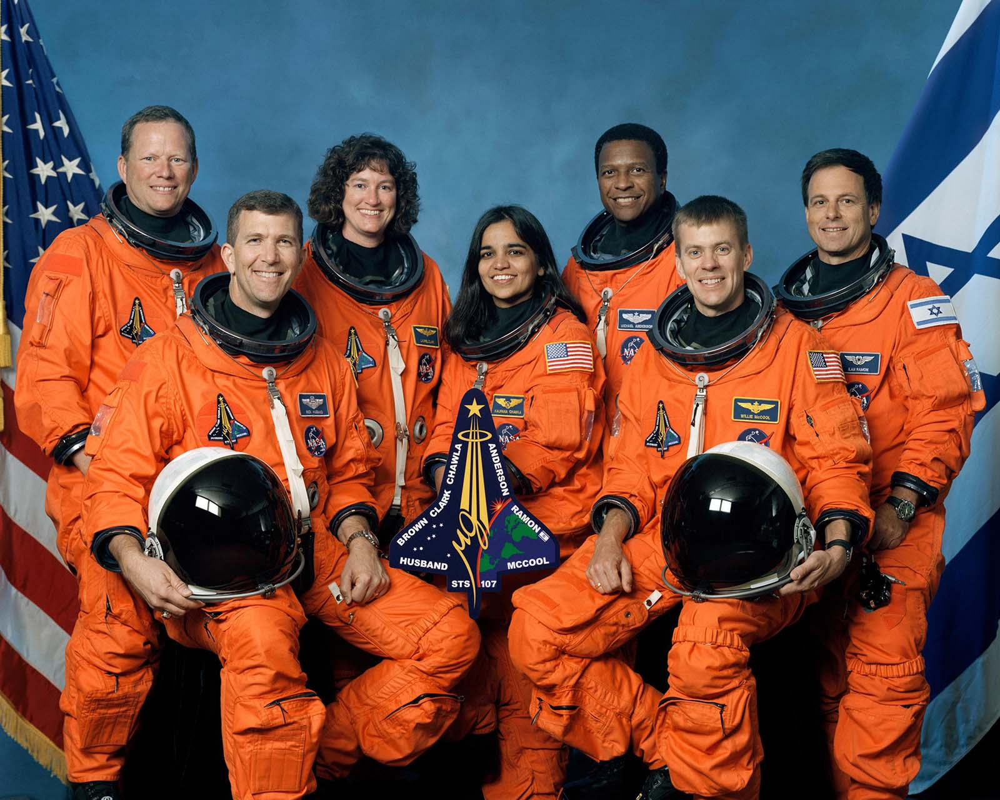
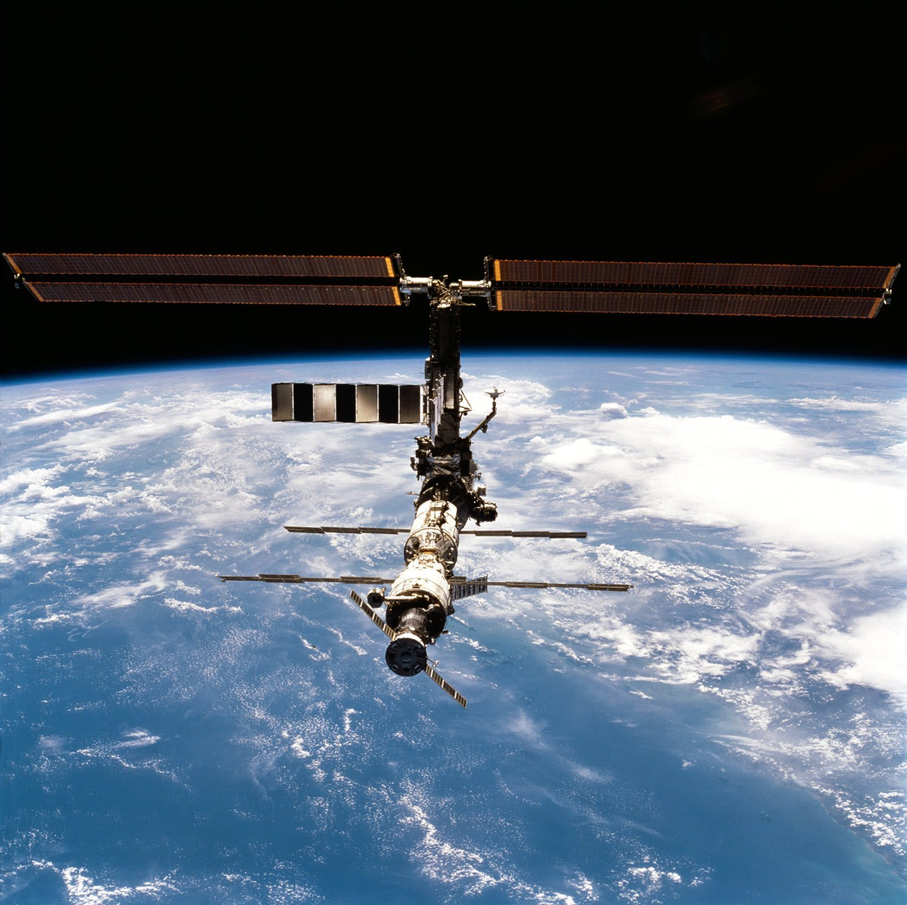
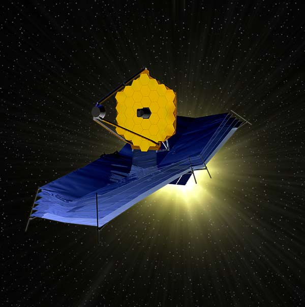

Chapter 9 - A Legacy
NASA’s STDN supported every U.S. space mission since 1958. Its desire was to stay inconspicuous, the more invisible the better. Much like an offensive lineman in the game of football or a player in an orchestra, they did not want their name called because it usually meant there was a penalty or a wrong note. Yet, the team could not win without the lineman nor could the orchestra music make without every member playing the right note.
How will space communications progress in the decades ahead and how will it best be able to build on the accomplishments of the past?
This is the question the NASA finds itself asking at the dawn of the twenty-first century. But this is not new.
Man has made remarkable strides in penetrating the atmo sphere surrounding his planet and even venturing into space. Scores of objects have been launched into space, many to roam the solar system forever. We stand now on the threshold of a new era of discovery.1
This was not the reflection of a modern day philosopher, but rather, something that Ed Buckley said in 1966 even before man had first left the confines of Earth. Bill Wood echoed this sentiment when he was asked in 1983 even before the first TDRS was launched just what the future holds for spaceflight tracking and communications.
Today, the problems are hardly any different: how to handle reliably and economically a data flow now grown to 50 million bits-per-second and how to make the best use of these data in our search for new knowledge for the benefit of all mankind. We may have new and more advanced technology, but the challenge remains. . . . Our motto was a rather basic one: ‘Close is good enough when you are playing horseshoes, but that is not good enough for manned spaceflight!’2
The challenge remains. Instead of megabytes (millions of bytes of digital data), today space communications work in gigabytes and terabytes (billions of bytes and higher). Just like it took the pioneers of aviation nearly half a century to go from 10 miles per hour to the speed of sound, the last 50 years of the twentieth century have seen tracking and space communications go from the picket line of Minitrack to the near-instantaneous, on-demand services offered by an invisible network that sees an entire hemisphere of Earth from 36,000 kilometers away.
In an age when global weather forecasts, spectacular images of celestial objects never before seen from space, and live images of astronauts living and working in space are taken for granted, it is difficult to imagine a time when America was struggling to put satellites into space. Engineers were not even sure whether or not they could be reliably tracked let alone prove useful on an everyday basis. From optical and radar tracking to radio interferometry, and from the large, automatic tracking antennas of the 1960s to the SN of today, advancement in communications technology has under-gone many evolutions during this time. In fact, entirely new industries have been spawned. Though it may sound a bit trite, the continuing legacy of the spaceflight networks through its many incarnations has not only produced America’s success in space but has, in its own way, contributed to such spin-offs as calculators, personal computers, digital watches, cellular telephones, and internet links to remote corners of the world. From VHF and UHF to S-band and Ka-band, the exploitation of higher and higher frequencies across the radio spectrum has enabled the spaceflight networks to meet and plan for the ever-increasing demand for higher bandwidths that are needed both today and for visions on the horizon.
But more than the technology itself, the history of America’s STDN is a testament to the people behind the scenes who made it work, both as an organization and as a technological marvel. Leading the way has been the organization at NASA’s GSFC, the Agency’s focal point for all near-Earth communications and scientific satellite work, a role which it continues to enjoy today. Henry Clements, who was the first Network Controller during Project Mercury, reflected on the role of this Center.
As for the support provided by the Goddard tracking and communications team, it was outstanding—though it has been largely unrecognized even within NASA’s own family. Management, outside the JSC, all too often failed to recognize the very important contributions made by these men and women, engineers and computer experts who were stationed around the world.We could not have done it without them.They got the data to us.3
Vern Stelter, who ran the Center’s Communications Division from 1962 to 1973, summarized what he and his people were all about. “We were there, but determined to be invisible. Ours was a service on which the programs could depend. We were there when needed.”4
This unpretentious mindset that the spaceflight tracking network be an “invisible network”—or as former Associate Administrator Charles Force put it like a light switch, always there when you turn it on—was something that Ozzie Covington always stood by. Said Covington unpretentiously years ago:
I must confess, I had never been able to actually pinpoint what my contributions were. Granted, we pushed the state of the art in the areas of tracking, communications, and computer applications. Maybe it was the assembling of a first rate team of men and women—both in NASA and private industry—who in fact deserve the credit.We were only in the background, providing the links between the astronauts and the Earth.5
This first rate team was in fact a testimony to what can be accomplished when industry and the government develop a high level of trust. From Bendix field technicians like Gary Schulz to Senior Managers like Glenn Smith and Cliff Benson or Program Manager Larry Jochen, working the networks became a way of life. Like the early days of Mercury when the Agency had “Go Fever”, many had “Island Fever”. Some ended up spending their entire careers with the contractor teams, hopping from one locale to another. Some brought their families, others found new ones. As one former supervisor put it, “We didn’t make a lot of money, but we had a lot of fun!”6
Murray Weingarten, President and Chairman of the Board for Bendix from 1973 to 1989 and who was perhaps the one most influential in establishing this esprit de corps of contractors, once summarized this legacy:
During the peak of the U.S.space program,some 2,300 Bendix people were committed to this effort.It was a good marriage,based on professional relationships and a dedication that would be difficult for some to understand. It was a productive partnership for both the government and private industry.There is no doubt that it has been effective, and we take great pride that the Congress of the United States referred to these people—both government and industry—as the ‘unsung heroes of the space program.’7
Author Alfred Rosenthal in 1982 interviewed Gerald M. Truszynski, NASA’s top official for Tracking and Data Acquisition from 1968 to 1978, and asked him to describe how the Agency (in particular, the importance of Headquarters charting the course and delegating the responsibilities to the Field Centers) and its contractors were able to meet the unique challenges of the time. The fabric of Truszynski’s remark is as true today as when he first spoke compellingly of it 25 years ago:
One of the major reasons for the outstanding success of the NASA tracking and data acquisition networks lies in the organizational and management approach taken by NASA in this vital area of flight program support.While the variety of these programs was quite broad—ranging from research sounding rockets through scientific satellites, manned missions of great complexity and far ranging planetary missions—all needed the very necessary common denominator of reliable, and in most cases, worldwide tracking and data acquisition support for their accomplishment.
In the beginning days of the space program, there was a ten-dency to look upon tracking and data support as an associated part of major flight program functions, or as a necessary part of launch vehicle operations. However, early in the 1960s, we were successful in making the point to NASA management that there was a need to organize the tracking and data acquisition and communications function as a single, centralized entity, responsible for the development, implementation and operation of these facilities for support of all of NASA’s flight programs.This resulted in a highly efficient structure and gave us the necessary resident technical expertise—in one office—to plan, develop, budget and defend before Congress the requirements for this key activity in an integrated fashion.
The office was able to become an integral part of the overall program planning function at NASA Headquarters and was involved, early on, in the evolution of every major program and thus able to translate mission requirements into network requirements in a timely manner.We now could plan our own destiny.We were given control over our own financial resources along with the technical expertise in the NASA Field Centers—primarily the Goddard Space Flight Center and the Jet Propulsion Laboratory— where major elements of these centers were directly associated with the tracking and data acquisition function.
The dedication of the people at these Centers was a major factor in the success of our program, and deserving of particular mention. We involved them directly in our planning and, with the splendid cooperation of the Center Directors, had the ability to deal quite directly with the appropriate technical groups to handle our problems with a minimum of administrative delay. Over the years, we evolved a network capability which was extremely reliable by requiring that systems committed for implementation into the network were within the state of the art and had the necessary developmental and test lead times to assure their operational integrity. This, despite the fact that we were working under too stringent, fixed time constraints. Because of this record, we were able to earn the confidence of the flight programs, the support of our management, and the Congress, which gave us the financial resources to get the job done.
Another important element in the success of our operations was the good international cooperation we enjoyed where we were required to establish tracking stations in foreign countries.We,at the outset, always approached each country involved as partners, never attempting to or even suggesting that we establish Little Americas. We encouraged the active participation of the host country in the planning, construction, and subsequent operation of the tracking stations. As a result, we were never refused permission to establish our facilities. Zanzibar [and Havana] was the only facility we had to vacate on short notice when a coup toppled the government.
In the final analysis, the success of any activity usually can be traced to the individual efforts of the personnel who were highly skilled and dedicated in their efforts to provide the highest quality and roost reliable support possible to the space flight programs.The late Congressman Olin Teague referred to these individuals as ‘the unsung heroes of the space program.’ I certainly share his sentiments and thank each one for a job well done.8
As the space agency builds on these accomplishments moving into the future, some challenges remain the same. But some are quite different. Take the ISS and the Space Shuttle—which NASA plans to retire in 2010 after completion of the ISS. To support a Shuttle launch, it is not just the Agency’s Space and Ground Networks that are involved. It is a collaborative effort between NASA and the DOD, with international partners also having a stake. In a sense, NASA integrates a network from different organizations in order to meet a particular mission need. And when that mission is over, the network is broken up to allow the different stakeholders to return to their primary functions. This kind of “virtual network” allows the Agency the flexibility it needs to accommodate many different types of missions.

A case in point is the new communications requirement stipulated for the Space Shuttle after Columbia broke apart on reentry during the final minutes of STS-107 on 1 February 2003. Foam and ice debris from the Shuttle’s giant External Tank during launch punched a hole in the leading edge of the left wing which led to thermal protection breakdown in the 1,650°C (3,000°F) searing heat of reentry, killing the crew of seven. (The crew members on that fateful day were Commander Rick D. Husband; Pilot William C. McCool; Mission Specialists Kalpana Chawla, David M. Brown and Laurel Clark; Payload Commander Michael P. Anderson; and Payload Specialist Ilan Ramon of the Israeli Air Force.)
Flight rules now require continuous, live, high-resolution video of the External Tank during the Shuttle’s ascent into orbit. To this end, Enhanced Launch Vehicle Imaging System, or ELVIS, cameras are mounted on the Orbiter, SRB and the tank itself. The goal is to provide the ground with engineering and visual data to assess the vehicle condition and tracking of debris during launch and ascent. To meet this flight-critical (“Crit 1”) safety requirement, the integrated network stations of Merritt Island/Ponce de Leon, Wallops Island and the Jonathan Dickinson Annex provide the necessary and seamless link needed for ELVIS to work.9
With respect to communications with the ISS, several upgrades have been implemented in recent years or will be in the near future. One such modification goes by the catchy acronym of IDEA: ISS Downlink Enhancement Architecture. IDEA is in essence a modified ground system infrastructure that provides the space station with the ability to increase its science data return rate three-fold, from 50 megabits-per-second to 150 over the station’s Ku-band downlink. A fiber optic ground network began in 2004 enabling JSC and MSFC to receive this high-rate data. It became operational in 2005.10
For TDRSS and the SN, GSFC and JSC have been working with the ESA since 1998 to make the system compatible and ready to support the latter’s much anticipated Automated Transfer Vehicle, or ATV. ESA’s ATV will be an automated, resupply ship designed to dock to the ISS and provide the crew with dry cargo, oxygen, water, and propellant. After cargo is unloaded, it will be reloaded with waste products, undocked, and set on a course for destructive reentry.
The first craft—to be named Jules Verne after the nineteenth century French science fiction writer—is considered by ESA as the most sophisticated space vehicle ever to be built in Europe. To support these partner objectives, Goddard completed a series of communications compatibility tests in Bremen, Germany in 2004.11 Parallel with this effort, NASA SN engineers are working with the Japanese Space Agency NASDA to develop a tracking and communication solution for their H-II Transfer Vehicle (HTV), the Japanese version of Europe’s ATV. Coding, data rate, and modulation upgrades to the TDRSS are anticipated to be complete no later than 2007.12

Finally, there is the familiar matter of television. What started humbly on Apollo 7 has come full circle, with HDTV. Just like consumer demands for better and better pictures from sporting events to big-screen IMAX pictures, images from space are no different. Starting with STS-114 (the first flight after the Columbia disaster), real-time HDTV was downlinked. Future HDTV sponsors include the Japanese along with the American cable television’s Discovery Channel. Using customer-furnished hardware, HDTV signals will be downlinked from the ISS via TDRSS and distributed to users at the NASA Field Centers and to domestic and foreign customers.
The trend is clear. Space communications will remain an international activity, just like it was when it all started back in the 1950s. As it did then, NASA Headquarters will play a leading role to establish partnerships with the international space community. In the late 1980s, the Space Networks Interoperability Panel (SNIP) was informally created at an international conference under the direction of then Associate Administrator Robert Aller. At that time, differing space data relay systems were in various stages of planning and development by NASA, ESA, and NASDA. It was the first forum specifically designed to discuss, anticipate and try to resolve differences in the design and operation of the different systems with their stakeholders. The routine meetings among the agencies identified, for example, frequency differences, on-orbit locations, user operation limitations, and even emergency backup support scenarios in the event of total space communication system failures.13
This panel was followed in the June of 1999 by the formal establishment of the Interagency Operations Advisory Group, or IOAG. Here, top officials from NASA, Italy’s Agenzia Spatiale Italiana (ASI), the French Centre National D’Etudes Spatiales (CNES), Germany’s Deutsches Zentrum für Luftund Raumfahrt (DLR), the European Space Agency (ESA), and the Japan Aerospace Exploration Agency (JAXA), meet annually (at rotating host countries) to coordinate space communications policies, procedures, technical interfaces, and many other matters related to interoperability. The group itself does not do—for the most part—the technical work. It relies primarily on technical work already completed by other organizations, for example, that develop standards for space systems. However, when a deficiency or incon-sistency is discovered, the IOAG may recommend to such organizations that they address the missing areas in their work. By doing so, a common framework is laid that enables synergy and cooperative efforts among all the international partners.14
In the same vein, in 1995 and 1996, NASA was an active participant in the National Facilities Study—a joint effort by the DOD, NOAA, NASA, and other U.S. government participants—the basic premise of which was to reduce duplication and identify areas of national need. One of the sub-panels was devoted to aerospace tracking and communications capabilities. It was in this panel that issues regarding frequency usage, allocation, and station locations were addressed. There was also extensive discussion regarding synergies between NASA and NOAA in places like Alaska for mutual cost savings and improved coverage. Like the IOAG and its predecessor the SNIP, the National Facilities Study addressed and tried to resolve the spectrum differences and expedite cooperative operations amongst the agencies.15
With respect to ground station operations, since Earth is round and the United States obviously does not own territory everywhere, it has been and always will be an international activity. In other words, if NASA has a requirement on foreign soil, it has no choice but to go to the other country. This actually has inherent advantages. Said Bill Watson:
I think the really neat thing about the early ground network was that many of these countries welcomed us in because they wanted to join the space program. But they also welcomed us in on the condition that we train their people, hire them to become technically literate and competent.We did a lot of that.We had a NTTF at Greenbelt that ran classes for years and put thousands of people through and trained them up in receivers and recorders and computers and how to solder and all kinds of techniques.They then took that back home and became technically competent in the countries that they came from. I think we still see that desire to engage, even with our peers today.16
While Earth science will always be there serving to anchor near- Earth space activities, the future for NASA—as it was in the past—is exploration. Here, synergies exist between science and sending astronauts back to the Moon and onto Mars, neither of which can be done without defining the space communication requirements. NASA Headquarters has set up, for this purpose, a Communication and Navigation Architecture Working Group to define and lay the foundation for its communication and navigation infrastructure for the next 25 years. One concept is a plan for an Integrated Near- Earth Network (INEN).
Although only a proposal, the elegance of an INEN is attractive since it would involve building a network one mission at a time. One of the first ingredients is Goddard’s Solar Dynamics Observatory (SDO), a geosynchronous mission that will monitor solar storms and send back information which will be a benefit to astronauts in space in case of storms. It will do this, plus provide warnings of commercial communications disruptions here on Earth.
In conjunction with development of the SDO is the LRO, or Lunar Reconnaissance Orbiter. To support these projects, NASA’s next expansion in ground stations may again be at White Sands, New Mexico where three 60-foot Ka-band antennas could be built to support these missions. Both the SDO and LRO will utilize the Ka-band frequency for communications where ever higher bandwidths and data rates can be accommodated. (Today most of NASA’s communications are at X-band which is fine for data rates of around 150 megabits-per-second.) With the advancement to Ka-band, though, data rates can be increased by over a factor of three, to 500 megabits-per-second.17
With Ka-band capability, the kernel—or seeds—for an exploration network at White Sands could be established. The idea is that once SDO and LRO are over, this resource could then become part of a Ka-band network for lunar exploration. As the need arises, S-band commercial sites—for instance, in Australia and South Africa—can be used to supplement White Sands. As it does today, NASA can buy these lower rate services commercially. As the Exploration Program matures and as the need for high rate data requirements expands, the Agency might then consider putting additional Ka-band dishes in places like South Africa, Australia, or Madrid to complete its mid-latitude, high data rate network for exploration.18

The idea is that although the DSN has traditionally been responsible for planetary communications, it will help support near-Earth work as well since GSFC has closed down its large tracking antennas in places like Rosman and Fairbanks. Since the TDRSS coverage zone stops at around 12,000 kilometers (7,400 miles)—the point at which TDRSS can no longer provide continuous communications with a spacecraft—new 18-meter (60-foot) Ka-band systems will be added to cover the gap between near-Earth and deep space. It in effect pushes the boundary of the NEN out to somewhere around two million kilometers (1,240,000 miles), which is where near-Earth transitions to deep space from a spaceflight point of view.19
Of particular interest in recent years are spacecraft that can be located at five distinct points in space where the gravitational pull of Earth, Sun, and Moon all balance out. A craft positioned at one of these “Lagrange Points” (named after Italian-French mathematician Joseph Louis Lagrange) can “hover” there in a so-called lissajou orbit—somewhat akin to the “figure-8” loop that a geosynchronous satellite does over Earth except the orbit would not be stable. One point in particular, called “L2,” is approximately 1.5 million kilometers (932,000 miles) away from Earth beyond the Moon. In the coming decade, NASA plans to put several astronomical observatories there, including the much anticipated James Webb Space Telescope—the follow up to the HST. Space will be a busy place.20
Under the envisioned Integrated Near-Earth Network, the Agency could use a combination of 18-meter Ka-band antennas plus the TDRSS to provide seamless coverage on a space mission. Take a Mars exploration mission for instance. As it is launched out of the KSC, it would be supported from a Merritt Island/Ponce de Leon-like station, but equipped with Ka-band. Just like the Shuttle, it would then transition to TDRSS soon after launch. But as the vehicle leaves Earth’s orbit and out of TDRSS coverage, the new Ka-band antennas at mid-latitude locations such as New Mexico, South Africa, or Madrid and Australia would pick up its signals much like the Apollo stations did with their Unified S-Band antennas in the 1960s and 1970s. Finally, as it goes beyond two million kilometers towards Mars, coverage will transition over to the DSN.21
NASA’s tracking and data network will have then come full-circle, albeit this time with much faster data rates, much higher bandwidths and much more autonomy than before. This is really but a reflection of the cycli-cal nature of space exploration. The first satellites went into orbit to explore Earth. This was followed by space probes to the Moon and the planets. After America sent 12 astronauts to the Moon and won the space race, the Agency once again concentrated on Earth science, both un-crewed and with human presence (the ISS). In the coming decades, this cycle will likely shift once again to emphasize human exploration, not only of the Moon but this time out to Mars and beyond.
To this end, NASA’s Exploration Systems Mission Directorate plans to start flying the Crew Exploration Vehicle soon after the three Space Shuttle Orbiters are retired in 2010. To ensure continuity, the TDRSS will have to deploy new satellites in the 2012 to 2015 time frame. As astronauts return to the Moon, the Agency will likely need some type of lunar relay system to be able to communicate with the spacecraft when it is on the back side of the Moon. Much has happened in the three-decades since Apollo last went to the Moon. Tragedy, unfortunately, has played a major role. To enter lunar orbit, the Apollo Service Module had to fire its engine on the backside of the Moon out of communication with Mission Control. After Challenger and Columbia, the Agency will likely not want to fire another rocket without having a communication link and knowing what happened. Thus, there is expectation at NASA that a TDRSS-like system on the backside of the Moon may have to be built before returning astronauts there.
The challenges don’t stop there. Farther down the road, as mankind places our first steps on Mars, high-definition television will have already been a fixture for many years. The world is going to want to see pictures a lot clearer than what it saw with Armstrong and Aldrin. To do this, an optimal array of antennas and frequencies will be needed. The magnitude of the challenge should not be understated. For example, architectural studies have shown that in order to receive 100-megabits of low bit-error data from Mars, 100 to 300 12-meter (40-foot) antennas will need to be arrayed together in one location!22 Not impossible but clearly a challenge. Then there is the issue of relay and perhaps more importantly, delay. It takes light and radio signals anywhere from 3 to 18 minutes to reach Earth from Mars—the exact time depending on where the two planets are with respect to each other. One might ask, does the information we receive have to be real-time or is it good enough to just have the information tell what happened?
Delay-tolerant networking is even today a major issue for NASA (and for information technology at large). A simple example would be the case of a person using wireless internet access on a bus or a train. As he travels through a tunnel and loses his session, he would not want to have to start all over again when he resumes the session on the other end. The issue is how to get internet standards to evolve to the point where they can reliably cope with delays.
NASA will be busy.
With President Bush recommitting America to human space exploration, the National Aeronautics and Space Administration has been offered an opportunity that was not really all that well formed prior to 2004. With that vision comes the opportunity for NASA to take a new look at where it is going as the nation’s space agency, and in particular, where it is going from a space communications point of view. The two are inextricably tied together. In sort of a twist on the popular American Express advertising slogan, those who work the networks at the Agency have adopted as their unofficial tagline “Space Communications: Don’t Leave Earth Without It” when describing the indispensable role that the tracking and communications networks have played over the years.23
Because space communications are not easy, those who build the network are really building an enabling capability for the future. Just as the MSFN enabled the United States to safely go to the Moon and back, today the TDRSS enables the ISS and other data-rich spacecraft to return the amount of data that they were designed for. In many ways, as the previous generation did for today, those who now work the Space and Ground Networks are setting up for what is to come for the next generation.
The story of America’s global spaceflight tracking network is ultimately the story of the men and women who made space communications a reality before it became the neat thing that it is today, something that we cannot live without. When Apollo 11 landed on the Moon in 1969, 56-kilobit connections to ground stations were a big deal. Today, the space agency hauls 4.5-terabytes (that is, 4.5-trillion bytes of digital data) a day back to Earth at an average rate of 100-megabits (100,000,000) per second.24
As one walks the hallways of NASA, whether it be the GSFC, the JSC or Headquarters, there are televisions all around showing videos of astronauts working in the ISS, spectacular images of celestial bodies from across the galaxy taken by the Hubble Space Telescope, or live pictures of storm patterns developing on the other side of the planet. As Bob Spearing, NASA’s former top official for space communications, put it:
None of that—none of it—would be there without space communications. So when I walk by and somebody is looking at the television screen, I ask ‘Do you know how that picture got here?’ Most of them say no. Most people don’t have any idea. I’ll then go through a little talk about how the picture got here—and there is a real appreciation then. From a legacy point of view, there are a couple of things. One thing is that communications is ubiquitous and it is a capability that we all assume and just move on.We don’t give it a second thought until it doesn’t happen. If you look back over time, I believe you’ll be hard pressed to find a mission that was compromised in any way by lack of communications. So our legacy is we deliver the goods and we always have. Every mission requires it and we have always delivered. . . . We made it work!25
As the NASA enters the second half of its first century, a new generation of space probes and human explorers will lead the way back to the Moon, eventually venturing to Mars and beyond. As they make these journeys, men and women here on Earth will track them across that vast ocean of space.
After all, someone will have to stock the ships for the new Columbus and the new Magellan!
Endnotes
- Kathleen M. Mogan and Frank P. Mintz, Keeping Track (NASA Goddard Space Flight Center, 1992), p. 77.
- Bill Wood interview from Vital Links.
- Henry Clements interview from Vital Links.
- Vern Stelter interview from Vital Links.
- Ozzie Covington interview from Vital Links.
- Cliff Benson interview.
- Murray Weingarten interview from Vital Links.
- Gerald Truszynski interview from Vital Links.
- Jon Z.Walker,“Space Shuttle Return-to-Flight and International Space Station Status,” NASA Goddard Space Flight Center Code 450, 10 June 2004.
- Ibid.
- Automated Transfer Vehicle (ATV) - European Space Agency (ESA), http://hsf.honeywell-tsi.com/atv.html (accessed 4 March 2006).
- See Note 9.
- David Harris email, 11 May 2006.
- James Costrell, “IOAG Charter,” 7 December 2004.
- David Harris email.
- Bill Watson interview.
- Ibid.
- Phil Liebrecht and Roger Clason, “GSFC Vision for Future Space Communications,” NASA Goddard Space Flight Center, September 2005.
- There is of course no physical boundary between what is called near- Earth and Deep Space. There is, however, a logical breakpoint based on radio frequency allocations. According to the Federal Communications Commission, the Deep Space Network allocation for Ka-band is 32 gigahertz, whereas communications below two million kilometers, the FCC thinks of it as near-Earth operations at 25 to 27 gigahertz. (Watson interview.)
- “Integrated Near-Earth Network,” NASA Headquarters Briefing, 2005. The term “L2” refers to an unstable equilibrium point on the other side of either body from a line segment joining two bodies (Earth-Moon, Earth-Sun). The term “L1” refers to the unstable equilibrium point on the line segment between two bodies. The L2 point for the Sun-Earth pair is 1.5 million kilometers from Earth, on the side opposite from the Sun. The L1 point for Sun-Earth is 1.5 million kilometers from Earth, in the direction of the Sun. The L1, L2 concept is hard to grasp, but for the Earth-Moon system, it is associated with high ocean tides—both on the side of Earth facing the Moon and on the opposite side of Earth. Thus, a high tide occurs every 12 hours.
- See Note 11.
- See Note 16.
- Bob Spearing interview.
- See Note 16.
- See Note 23.